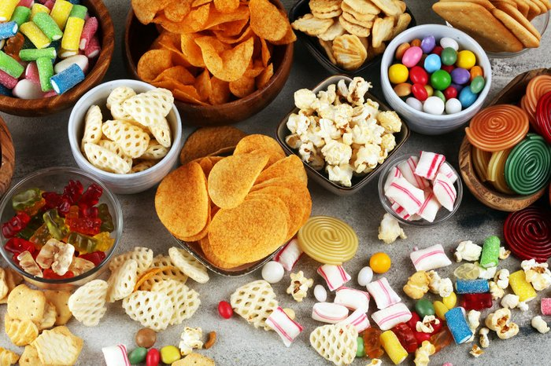

Alimentos
A categoria de alimentos, a qual inclui biscoito, suco, leite, refrigerante, confeitos etc. é regida pela legislação Resolução da Diretoria Colegiada RDC 429/2020 da ANVISA.
A categoria de alimentos, a qual inclui biscoito, suco, leite, refrigerante, confeitos etc. é regida pela legislação Resolução da Diretoria Colegiada RDC 429/2020 da ANVISA.
Os suplementos alimentares estão presentes dentro da categoria de Alimentos, de acordo com a ANVISA. No entanto, essa categoria é regida por uma legislação específica, a qual estabelece os ativos permitidos para uso e suas doses mínimas e máximas. A legislação aplicável é a Resolução da Diretoria Colegiada RDC 243/2018.
Os alimentos infantis são aqueles destinados aos bebês (0 a 12 meses) e às crianças da primeira infância (1 a 3 anos). Também estão incluídos dentro da categoria de alimentos, mas são regidos por legislações específicas, as quais determinam as quantidades de cada ativo e os compostos permitidos para adição aos produtos finais. Ao todo, quatro legislações são aplicáveis a essa categoria, mas a principal é a RDC 45/2014.